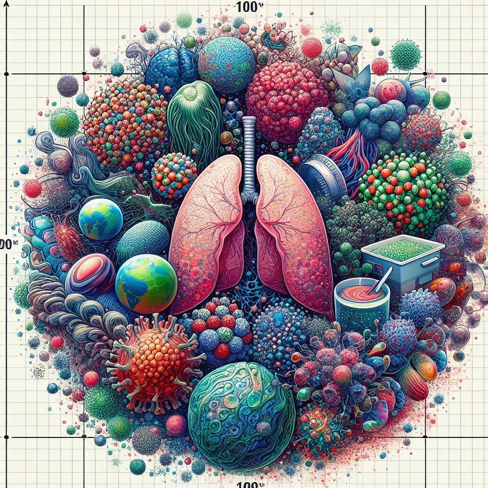

Deena D
Summary
Myself Deena D studying in SA Engineering College, a pre-final year student, and I am the representative of my class. I have maintained a CGPA of 8.3+ overall for 5 semesters. I am interested in Machine Learning, Frontend Development, and Data Visualization tools. I like to explore new technologies, for which I have attended many workshops, seminars, and meets. I have also participated in hackathons. For Machine Learning, I have learned Python; for frontend development, I have learned HTML, CSS, and JavaScript; and for visualization, I have learned tools like Power BI, Tableau, Excel, and SQL. Additionally, I have worked as an HR Manager during a three-month internship.
Education
- SA Engineering College - Pre-Final Year
- CGPA: 8.3+
Skills
Frontend Development
- HTML - Experienced
- CSS - Experienced
- JavaScript - Basic
Programming Languages
- C - Intermediate
- C++ - Intermediate
- Python - Intermediate
- Java - Basic
Tools & Additional Skills
- Canva
- Figma
- Power BI
- Tableau
Creative Skills & Experiences
- Communication
- Customer Service
- Problem-solving
- Time Management
- Leadership
Certifications
Projects

MultiDisease Prediction
This Python web application for predicting various diseases including diabetes, breast cancer, heart disease, and Parkinson's disease is built using the Streamlit framework and employs trained machine learning models for predictions.
Github

Credit Card Fraud
This model is used to predict credit card fraud based on transaction history. The project was developed using Google Colab and employs logistic regression principles to determine whether a credit card transaction is fraudulent.
Github
Data Visualization
This project showcases a Walmart dashboard created using data from 2011 to 2014. The dashboard was developed using two popular data visualization tools: Power BI Desktop and Tableau. The purpose of this project is to provide users with an interactive and informative visualization of the provided Walmart data, allowing them to explore various metrics and trends.
Github
Experience
HR Manager - 3-month Internship
Declaration
I hereby declare that the above-furnished information is true to the best of my knowledge and belief.